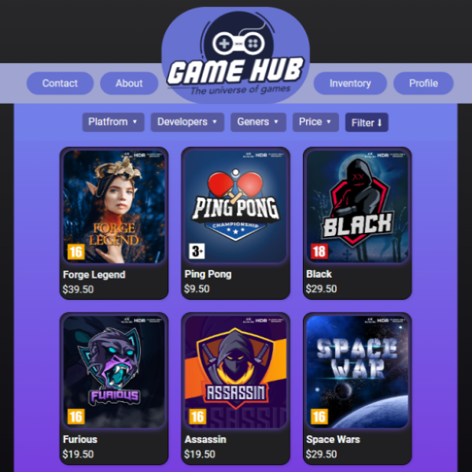
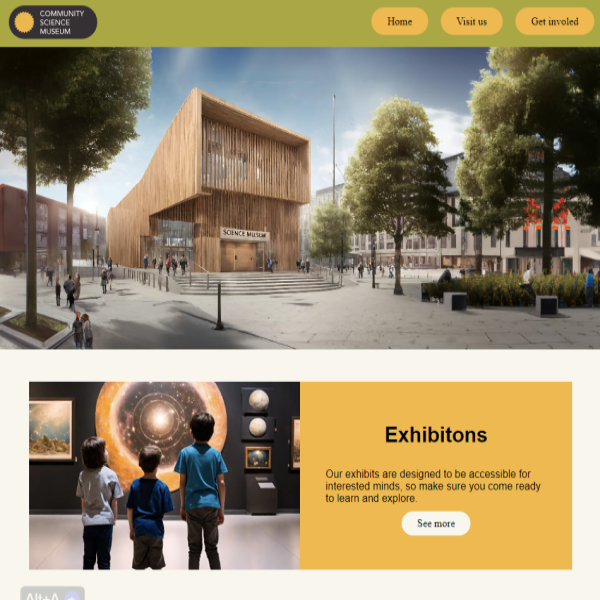

01

Cross-Course Project
This project involves creating a functional, responsive website based on the Design 1 brief. It includes all pages from the site architecture and mimics necessary JavaScript functionalities. The focus is on semantic HTML, well-structured CSS, and ensuring responsiveness and accessibility.
02
